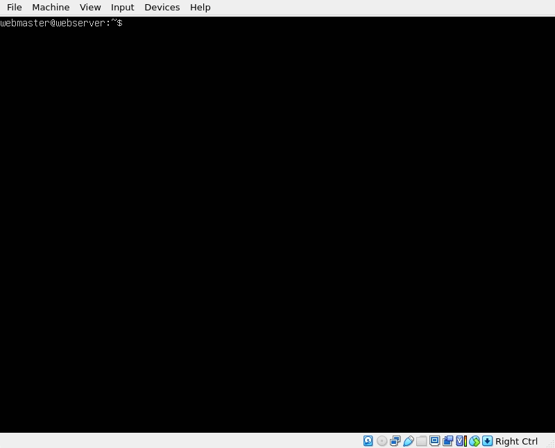

An open-source platform made by Oracle. It allows users to run multiple guest operating systems on a single host machine.
These are the instructions and basic summaries on all the essential components to create and host a simple site on a web server. Included in these components are the use of Virtualbox, Ubuntu, Apache, SSH, and Firewalls.
An open-source platform made by Oracle. It allows users to run multiple guest operating systems on a single host machine.

A variant of the Ubuntu Linux distribution made for server environments. It offers a secure platform for hosting websites. It receives regular updates and has a large repository of software packages. It provides tools for system management, security, and virtualization. These features make it suitable for a wide range of server workloads.
An open-source web server that is used around the world. It is a very flexible application which allows for efficient handling of connections at the same time. It has support for SSL/TLS encryption which ensures a secure communication.

Stands for Secure Shell. It is a cryptographic network protocol that allows for secure communication between two computers over an unsecured network. It provides encrypted connections for secure remote login. SSH authentication usually involves passwords. SSH is an essential tool for secure remote access and administration.
A network security device that monitors and controls incoming and outgoing network traffic based on predetermined rules. It is a barrier between a trusted internal network and an untrusted external network.
Minimum requirements are 2 GBs of RAM and 5 GBs of Disk space

sudo apt update
sudo apt install apache2 -y

To enable the firewall
sudo ufw enablesudo ufw allow 'Apachesudo ufw allow 'OpenSSH'
To check the status of the firewallsudo ufw status
To make sure if Apache and SSH are runningsystemctl status apache2 --no-pagersystemctl status ssh --no-pager
If the commands do not say "running"
sudo systemctl restart apache2 ssh
Create the directory for mywebsite as follows:
sudo mkdir /var/www/mywebsite
Modify the ownership of mywebsite so that it is now owned by your user instead of root
sudo chown -R $USER:$USER /var/www/mywebsite
Now let’s change the file permission so that the owner can read, write, and execute the files while granting only read and execute permissions to groups and others:
sudo chmod -R 755 /var/www/mywebsite
We can now create a simple html document to be served from our new virtual host. Create a document with the nano text editor called index.html in the /var/www/mywebsite/ directory:
sudo nano /var/www/mywebsite/index.html.
Once the new document opens, type the following text:
Save and close the file when you are finished.
We need to create a virtual host file so that this new content can be served. The default configuration is located in /etc/apache2/sites-available/000-default.conf
However, we do not need to touch this file, we can instead create a new one as it is best practice. To create a new config file, we are going to use nano again:
sudo nano /etc/apache2/sites-available/mywebsite.conf
Add the following text to the domain config file:
<VirtualHost *:80> ServerAdmin webmaster@localhost ServerName mywebsite ServerAlias www.mywebsite DocumentRoot /var/www/mywebsite ErrorLog ${APACHE_LOG_DIR}/error.log CustomLog ${APACHE_LOG_DIR}/access.log combined
Save and close the file when you are finished.
Now you can enable the site with the following command:
sudo a2ensite mywebsite.conf
Now lets disable the default domain:
sudo a2dissite 000-default.conf
Before we can refresh the configuration, we need to add a configuration line to the apache2.conf file. Open the file in nano:
sudo nano /etc/apache2/apache2.conf
Add the following line at the end of the file:
ServerName 127.0.0.1
Save and close the file when you are finished.
Now you can test the configuration for errors:
sudo apache2ctl configtest
The output of the command should look like this:
Syntax OK
If there are no errors, restart Apache to apply the changes:
sudo systemctl restart apache2
Now, if you open a web browser in your host computer and go the URL: http://ip.address.of.your.server/ your index.html document should load.